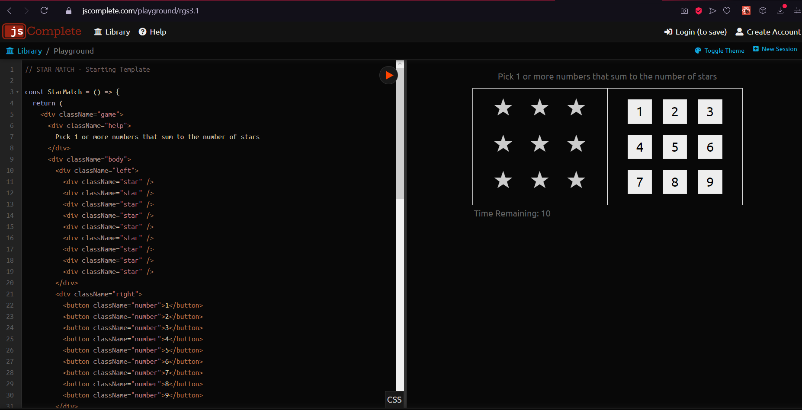

CAPITULO 1
Hay el objeto utils que tiene algunas funciones útiles para sumar una matriz, crear una matriz
de números, elegir un número aleatorio en el rango o elegir una suma aleatoria en una matriz de números.
Range creando un rango desde el 1 hasta el número actual de estrellas y así mismo se mapea ese rango,
porque el rango ahora es una matriz de 1 a 5 y se lo mapea en una matriz de estrellas y se deja una
identificación para las estrellas que se llama startId, se aplica lo mismo creando utils que el rango va
hacer de 1 a 9 y se lo mapea en un componente de botón y en lugar de todos los números se quita y
simplemente se toma uno y se lo coloca en el mapa, se utiliza el useState que devuelve una matriz de dos
elementos y con eso se tiene starts y setStars.
